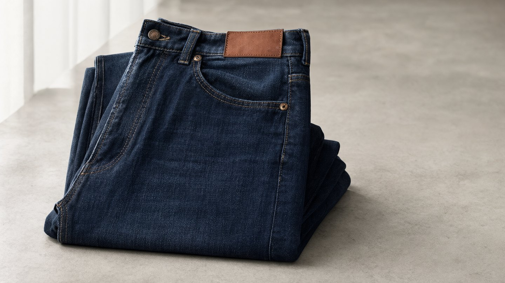
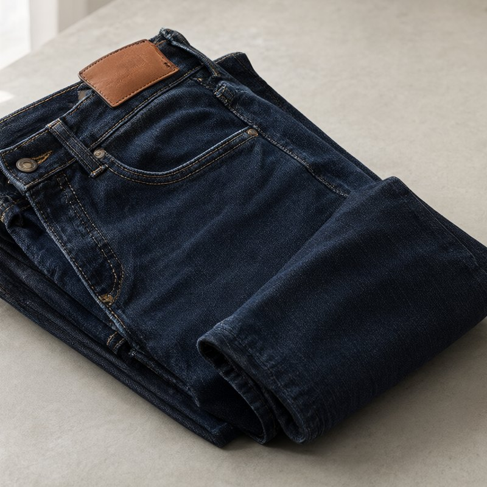
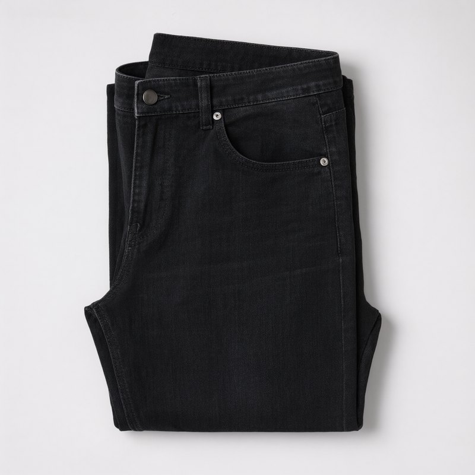
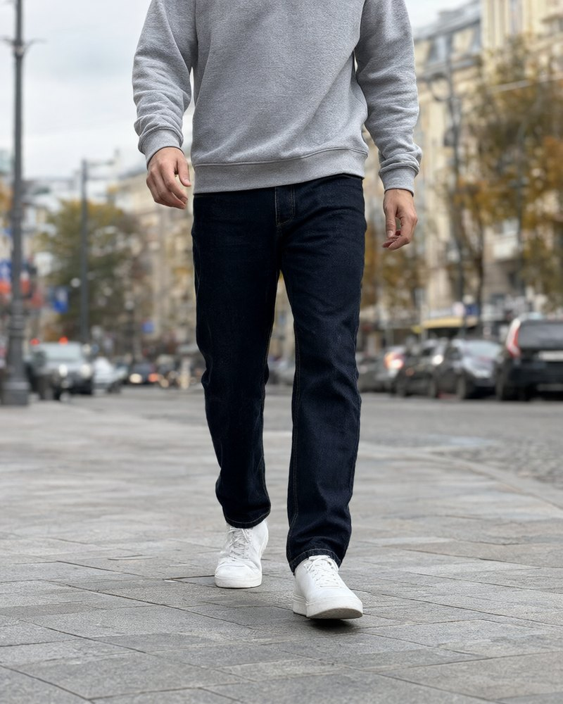

Прямые джинсы из плотного денима на каждый день
«Свой крой Base» это прямые мужские джинсы из плотного денима 12 унций. Две длины, чтобы не подшивать, и честная таблица размеров.
12 унцийплотность денима
32 и 34длина по внутреннему шву
3 490 ₽цена на WB

Каталог


Почему «Свой крой»
Плотный деним
Ткань 12 унций, 99% хлопок и 1% эластан. Плотная, но не жёсткая.
Две длины
Длина 32 для роста до 180 см и 34 для роста выше, подшивать не нужно.
Сшито в России
Шьём небольшими партиями и читаем каждый отзыв о посадке.

На работу, за руль и в выходные
Средняя посадка не давит в машине, а прямой крой подходит и к кедам, и к ботинкам. Не знаете свой размер по поясу? Ответьте на два вопроса, и мы подскажем.
Подобрать размер